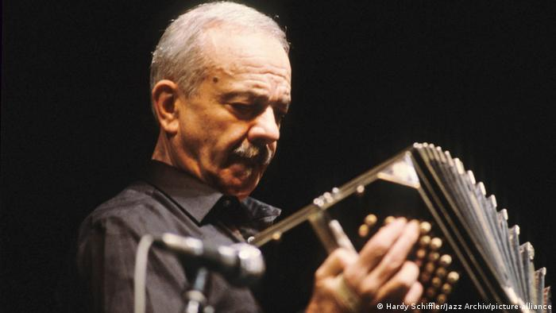

"La música es el arte mas directo, entra por el oído y va al corazón"
Ástor Pantaleón Piazzolla (Mar del Plata, 11 de marzo de 1921 - Buenos Aires, 4 de julio de 1992) fue un bandoneonista y compositor argentino considerado uno de los músicos más importantes del siglo XX y uno de los compositores más importantes de tango en todo el mundo.
Más sobre Astor